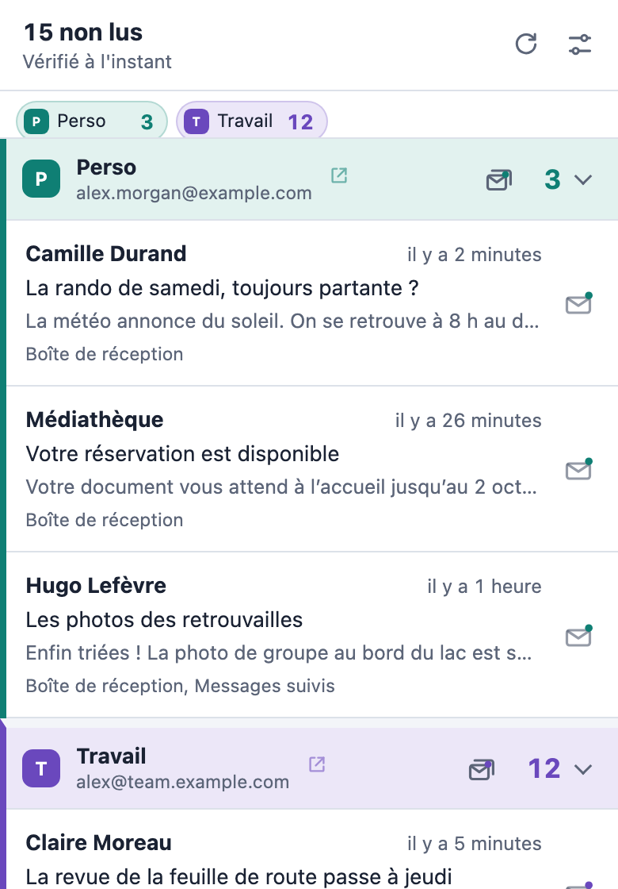

Vos nouveaux e-mails,
en un coup d’œil.
Le nombre de messages non lus dans la barre d’outils et des notifications sur le bureau pour chaque compte Gmail connecté dans Chrome. Sans connexion supplémentaire, sans OAuth, sans serveur.
Gratuit et open source. Disponible en 8 langues.

 4
4C’est vous qui décidez
Réglez chaque boîte de réception, onglet, Messages suivis, Importants ou n’importe lequel de vos libellés sur l’un des trois niveaux. Essayez ici : l’icône et la notification suivent vos choix, comme l’aperçu en direct de la page des paramètres.
- DésactivéNon vérifié
- CompterAjouté au nombre de non lus sur l'icône de la barre d'outils
- NotifierCompté, avec une notification sur le bureau
Aperçu
 4
4Plusieurs boîtes, bien distinctes
Chaque compte Gmail connecté dans Chrome est détecté automatiquement et a sa propre section dans la liste.
Un nom, une couleur et un son pour chacune
Distinguez vos boîtes d’un coup d’œil, et à l’oreille quand une notification arrive.
Un total ou un nombre par boîte
Affichez 15 sur l’icône, ou 3/12 pour voir chaque boîte séparément.
Vos libellés, choisis dans une liste
Les libellés sont lus directement dans Gmail : inutile de taper leur nom.
Agissez sans ouvrir Gmail
Traitez vos nouveaux messages où que vous soyez dans Chrome.
Marquer comme lu depuis la notification
Un clic sur la notification, et le message est aussi marqué comme lu dans Gmail.
Vider une boîte entière
Marquez comme lus tous les messages d’une boîte en une fois, après une rapide confirmation.
Ouvrir le bon message
Un clic sur un message l’ouvre dans le bon compte Gmail, en réutilisant un onglet Gmail ouvert.
Confidentiel par conception
Pigeon Post utilise la session Gmail que vous avez déjà dans Chrome. Aucun compte à créer, aucune connexion supplémentaire.
Ne communique qu’avec mail.google.com
Pas de serveur, pas de statistiques, pas de publicité, pas de pistage. Rien n’est jamais envoyé au développeur.
Les messages restent en mémoire
Expéditeurs, objets et extraits des messages non lus sont gardés en mémoire uniquement et effacés à la fermeture de Chrome.
Ne lit que le nécessaire
Il lit le flux des messages non lus de Gmail, jamais les messages complets, et ne modifie rien, sauf pour marquer comme lu à votre demande.
Open source
Tout le code est sur GitHub sous licence GPL-3.0 : vous pouvez vérifier exactement ce qu’il fait.
Prêt en une minute
Ajoutez-le à Chrome
Installez Pigeon Post depuis le Chrome Web Store.
Restez connecté à Gmail
Chaque compte Gmail connecté dans Chrome est détecté automatiquement.
Choisissez l’essentiel
La page des paramètres s’ouvre aussitôt. Choisissez ce qui est compté et ce qui vous notifie.

Gardez Pigeon Post gratuit
Pigeon Post n’a ni publicité, ni pistage, ni version payante. S’il vous fait gagner du temps, un bubble tea ou un petit don m’aide à le maintenir à jour à chaque changement de Gmail et de Chrome, et à créer la suite.
Le bubble tea se paie par carte, sans compte PayPal.